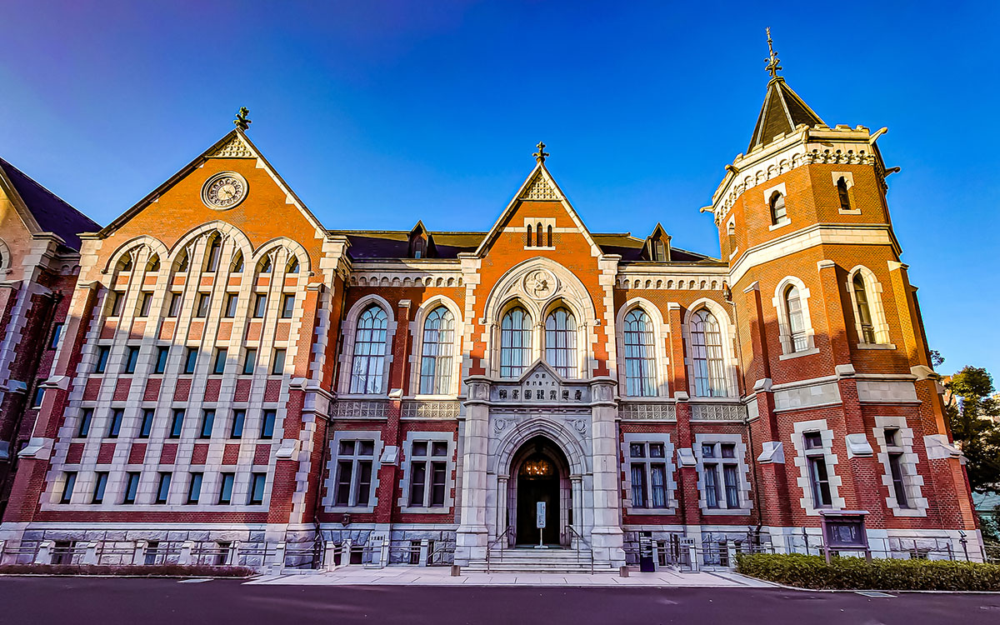

坂川 裕規
慶應義塾大学 通信教育課程 経済学部
※本ページはレスポンシブデザインに対応しています。
自己紹介
私は、多岐にわたる事象に対する深い知的好奇心を有しており、友人からは「博識であり、多才である」と評されることがあります。
主な関心領域・活動
- 知的好奇心: 一般に知られていない雑学的な知識にも関心を持ち、探求することを好みます。
- ドライブ: 北海道から九州まで車で移動した経験があり、運転技術には自信があります。将来的には、この運転スキルを活かした新たな活動も視野に入れています。
学習中の研究テーマ: 睡眠学
近年、個人の生活の質（Quality of Life: QOL）向上に資する目的で、睡眠学に関する研究を進めております。特に、最新の睡眠メカニズムを深く理解し、その知見を実生活に応用することを目指しています。
新たな挑戦: 華道
これまでクリエイティブな活動に触れる機会が少なかったため、新たな自己表現の場として華道を学ぶことを計画しております。友人に華道の師範がいる縁もあり、これを機に、自身の新たな可能性を探求することに期待を寄せています。
慶應義塾大学の通信教育課程における学び
私は、学術的な厳密性と研究教育機関としての信頼性を重視し、慶應義塾大学の通信教育課程を選択いたしました。既に学士の学位は取得済みであるため、本課程における学びは、学位取得そのものよりも、純粋な学問探求の機会として位置づけております。
学習へのアプローチ
- 積極的な探求: 自身の専門分野外の領域に対しても、新たな知識を獲得する機会と捉え、積極的に学習に取り組んでおります。
- 学習の愉悦: 困難な課題に対しても、知的な挑戦として捉えることで、常に学習プロセスそのものを楽しむことを信条としております。
本課程における最大の魅力は、そのコミュニティの多様性と独自性にあります。多種多様な背景を持つ学習者が集う環境は、学術的交流のみならず、人間的な成長にも大きく寄与すると考えております。